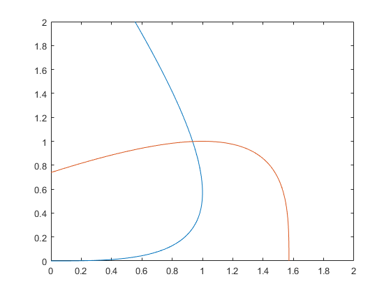

Metode de Newton per dues variables
Contents
Funció
F1 = @(x,y)sin(x+y)-x;
F2 = @(x,y)cos(x-y)-y;
Gràfic funció dues variables
x = 0:0.125:2;
y = 0:0.125:2;
fimplicit(F1,[0,2,0,2])
hold on
fimplicit(F2,[0,2,0,2])
hold off

x = 1; y = 1;
format long;
k = 0;
F = [F1(x,y);F2(x,y)];
DF = [cos(x+y)-1, cos(x+y); -sin(x-y), sin(x-y)-1];
tolz = norm([x,y]); tolf = norm(F);
tol = 0.0000001;
while (k <= 6 && tolf > tol && tolz > tol)
z = DF\F;
x = x - z(1);
y = y-z(2);
F = [F1(x,y);F2(x,y)];
DF = [cos(x+y)-1, cos(x+y); -sin(x-y), sin(x-y)-1];
tolz = norm(z);
tolf = norm(F);
k = k + 1;
end
sol = [x,y]
tols = [tolz, tolf]
sol =
0.935082064126466 0.998020058161932
tols =
1.0e-05 *
0.270286316755211 0.000000548592362